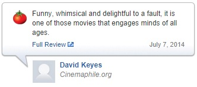

Advice for this homework:
- Words are simply strings separated by whitespace. Note that words which only differ in capitalization are considered seperate (e.g. great and Great are unique words).
- You might find some useful functions in
util.py. Have a look around in there before you start coding.
Problem 1: Warmup
Here are two reviews of Frozen, courtesy of Rotten Tomatoes (no spoilers!):


Rotten Tomatoes has classified these reviews as "positive" and "negative,", respectively, as indicated by the intact tomato
on the left and the splattered tomato on the right. In this assignment, you will create a simple text classification system
that can perform this task automatically.
We'll warm up with the following set of four mini-reviews, each labeled positive ($+1$) or negative ($-1$):
- ($-1$) pretty bad
- ($+1$) good plot
- ($-1$) not good
- ($+1$) pretty scenery
Each review $x$ is mapped onto a feature vector $\phi(x)$,
which maps each word to the number of occurrences of that word in the review.
For example, the first review maps to the (sparse) feature vector $\phi(x) = \{\text{pretty}:1, \text{bad}:1\}$.
Recall the definition of the hinge loss:
$$\text{Loss}_{\text{hinge}}(x, y, \mathbf{w}) = \max \{0, 1 - \mathbf{w} \cdot \phi(x) y\},$$
where $y$ is the correct label.
- Suppose we run stochastic gradient descent, updating the weights according to
$$\mathbf{w} \leftarrow \mathbf{w} - \eta \nabla_\mathbf{w} \text{Loss}_{\text{hinge}}(x, y, \mathbf{w}),$$
once for each of the four examples in order.
After the classifier is trained on the given four data points, what are the weights of the six words ("pretty", "good", "bad",
"plot", "not", "scenery") that appear in the above reviews? Use $\eta = 1$ as the step size and initialize $\mathbf{w} = [0, ..., 0]$.
Assume that $\nabla_\mathbf{w} \text{Loss}_{\text{hinge}}(x, y, \mathbf{w}) = 0$ when the margin is exactly 1.
-
Create a small labeled dataset of four mini-reviews using the words "not", "good", and "bad",
where the labels make intuitive sense.
Each review should contain one or two words, and no repeated words.
Prove that no linear classifier using word features can get zero error on your dataset.
Remember that this is a question about classifiers, not optimization algorithms; your proof should be true for any linear classifier, regardless of how the weights are learned.
After providing such a dataset, propose a single additional feature that we could augment the feature vector with that would fix this problem.
(Hint: think about the linear effect that each feature has on the classification score.)
Problem 2: Predicting Movie Ratings
Suppose that we are now interested in predicting a numeric rating for each movie review (in this problem the reviews .
We will use a non-linear predictor that takes a movie review $x$ and returns $\sigma(\mathbf w \cdot \phi(x))$,
where $\sigma(z) = (1 + e^{-z})^{-1}$ is the logistic function that squashes a real number to the range $[0, 1]$.
Suppose that we wish to use the squared loss.
For this problem, assume that the movie rating $y$ is a real valued variable in the range (0, 1).
-
Write out the expression for $\text{Loss}(x, y, \mathbf w)$.
-
Compute the gradient of the loss.
Hint: you can write the answer in terms of the predicted value $p = \sigma(\mathbf w \cdot \phi(x))$.
-
Assuming $y = 1$, what is the smallest magnitude that the gradient can take?
That is, find a way to set $\mathbf w$ to make $\|\nabla \text{Loss}(x, y, \mathbf w)\|$ as small as possible.
You are allowed to let the magnitude of $\mathbf w$ go to infinity.
Hint: try to understand intuitively what is going on and the contribution of each part of the expression.
If you find doing too much algebra, you're probably doing something suboptimal.
Motivation: the reason why we're interested in the magnitude of the gradients is because it governs
how far gradient descent will step. For example, if the gradient is close to zero when $\mathbf w$
is very far from the origin, then it could take a long time for gradient descent to reach the optimum (if at all).
This is known as the vanishing gradient problem when training neural networks.
-
Assuming $y = 1$, what is the largest magnitude that the gradient can take? Leave your answer in terms of $\|\phi(x)\|$.
-
The problem with the loss function we have defined so far is that is it is non-convex,
which means that gradient descent is not guaranteed to find the global minimum,
and in general these types of problems can be difficult to solve.
So let us try to reformulate the problem as plain old linear regression.
Suppose you have a dataset $\mathbf D$ consisting of $(x,y)$ pairs, and that there exists a weight vector $\mathbf w$ that yields zero loss on this dataset.
Show that there is an easy transformation
to a modified dataset $\mathbf D'$ of $(x,y')$ pairs such that performing least squares regression (using a linear predictor and the squared loss) on $\mathbf D'$ converges to a vector $\mathbf w^*$ that yields zero loss on $\mathbf D'$.
Concretely, write an expression for $y'$ in terms of $y$ and justify this choice. This expression should not be a function of $\mathbf w$.
Problem 3: Sentiment Classification
In this problem, we will build a binary linear classifier that reads movie
reviews and guesses whether they are "positive" or "negative."
In this problem, you must implement the functions without using libraries like Scikit-learn.
- Implement the function
extractWordFeatures, which takes a review (string) as input and returns a feature vector
$\phi(x)$ (you should represent the vector $\phi(x)$ as a dict in Python).
- Implement the function
learnPredictor using stochastic gradient descent and minimize
the hinge loss.
Print the training error and test error after each iteration to make sure your code is working.
You must get less than 4% error rate on the training set and less than 30%
error rate on the dev set to get full credit.
- Create an artificial dataset for your
learnPredictor function by
writing the generateExample function (nested in the generateDataset function).
Use this to double check that your learnPredictor works!
-
When you run the grader.py on test case
3b-2, it should output a weights
file and a error-analysis file.
Look through some example incorrect predictions and for five of them,
give a one-sentence explanation of why the classification was incorrect.
What information would the classifier need to get these correct?
In some sense, there's not one correct answer, so don't overthink this problem.
The main point is to convey intuition about the problem.
-
Now we will try a crazier feature extractor. Some languages are written without spaces between words.
So is splitting the words really necessary or can we just naively consider strings of characters that stretch across words?
Implement the function
extractCharacterFeatures
(by filling in the extract function), which maps each string of $n$ characters
to the number of times it occurs, ignoring whitespace (spaces and tabs).
- Run your linear predictor with feature extractor
extractCharacterFeatures. Experiment
with different values of $n$ to see which one produces the smallest test error. You should observe that this error is
nearly as small as that produced by
word features. How do you explain this?
Construct a review (one sentence max) in which character $n$-grams
probably outperform word features, and briefly explain why this is so.
Problem 4: K-means clustering
Suppose we have a feature extractor $\phi$ that produces 2-dimensional feature
vectors, and a toy dataset $\mathcal D_\text{train} = \{x_1, x_2, x_3, x_4\}$ with
- $\phi(x_1) = [0, 0]$
- $\phi(x_2) = [0, 2]$
- $\phi(x_3) = [2, 0]$
- $\phi(x_4) = [1, 2]$
-
Run 2-means on this dataset until convergence. Please show your work. What are the final cluster assignments $z$ and cluster centers $\mu$?
Run this algorithm twice with the following initial centers:
- $\mu_1 = [1, 3]$ and $\mu_2 = [1, -1]$
- $\mu_1 = [-1, 1]$ and $\mu_2 = [2, 2]$
-
Implement the
kmeans function. You should initialize your $k$
cluster centers to random elements of examples.
After a few iterations of k-means, your centers will be very dense vectors.
In order for your code to run efficiently and to obtain full credit, you will
need to precompute certain quantities. As a reference, our code runs in under
a second on Myth, on all test cases. You might find generateClusteringExamples
in util.py useful for testing your code.
In this problem, you are not allowed to use libraries like Scikit-learn.
-
Sometimes, we have prior knowledge about which points should belong in the same cluster.
Suppose we are given a set $S$ of example pairs
$(i,j)$ which must be assigned to the same cluster.
For example, suppose we have 5 examples; then $S = \{ (1, 5), (2, 3), (3, 4) \}$ says that examples 2, 3, and 4 must be in the same cluster
and that examples 1 and 5 must be in the same cluster.
Provide the modified k-means algorithm that performs alternating minimization on the reconstruction loss.
Recall that alternating minimization is when we are optimizing two variables jointly by alternating which variable we keep constant.